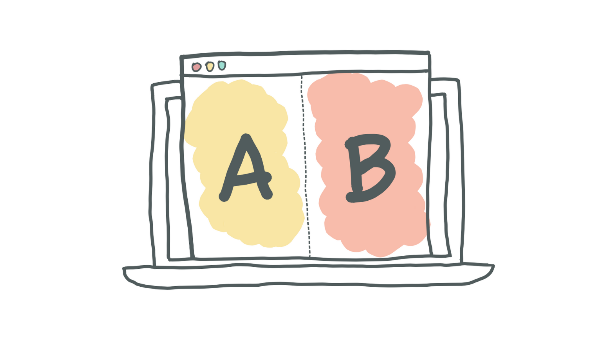
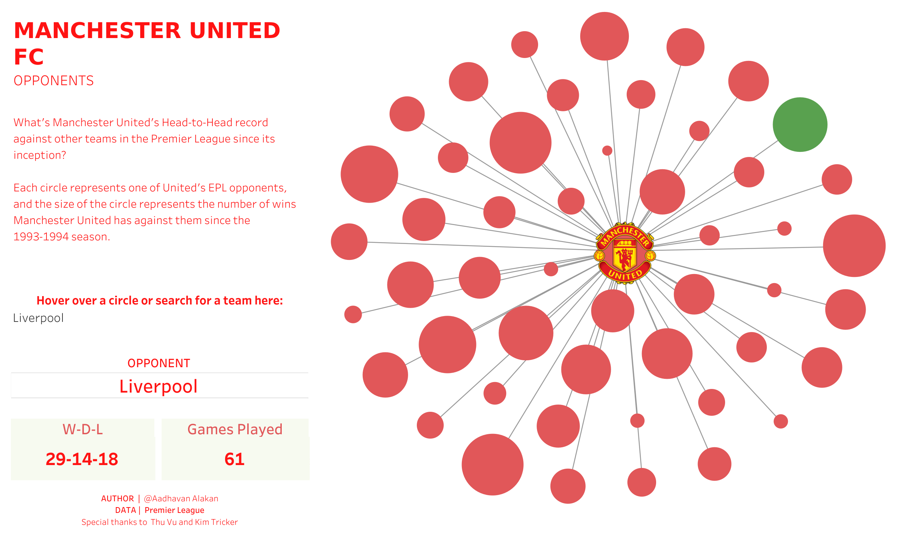

Kittengram is an app where users can share their cat pictures and users can only comment or like about other user’s pictures. The business model is based on Ads. The goal is to determine whether new feature (sponsored post) is liked by the users and the company’s revenue increases.

Developed an interactive dashboard for finding Business Insight into Atliq Hardware in Power BI. The project is an end-to-end Data analysis of the key performance indicators of various departments.
The project focuses on predicting the sentiment polarity of user reviews using Deep Recurrent Neural Networks Techniques.
The project focuses on analyzing the Co2 emissions of celebrities who are flying private.

Performed Exploratory Data Analysis on big data (~200k rows and 45 features) of COVID data to find intresting Insights.
A big data project with EDA and Model fitting using python.

The project is about creating an interactive dashboard of the Red's Head-to-Head record against all EPL teams.